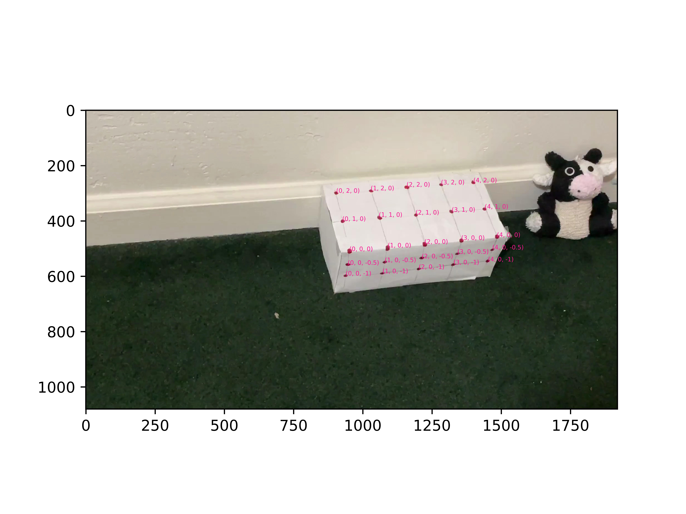

In this project, we achieve augmented reality by drawing cubes on top of a box.
We start by producing a video of a box that has been marked with twenty-five "keypoints". We move the camera during the video to capture the box from different camera positions and angles.
We manually label each keypoint in the first frame of the video.
We also assign three-dimensional "world coordinates" to each keypoint. We can do this easily because the keypoints are evenly-spaced on the box.
We need to know the two-dimensional "image coordinates" of each keypoint in a particular frame in order to draw an object in that frame. We already know the image coordinates of keypoints in the first frame, and we want to determine the image coordinates of keypoints in other frames.
For each keypoint, we track the changes in the image coordinates of that keypoint with a median flow tracker. We use twenty-five trackers to determine the image coordinates of every keypoint in every frame.
For each frame, we now have...